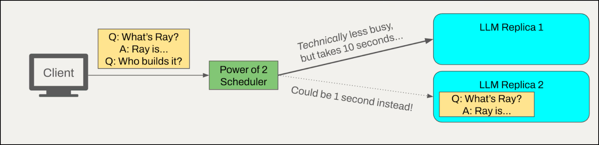
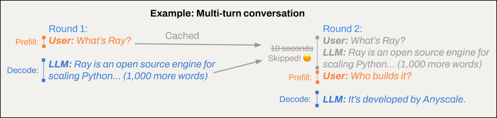
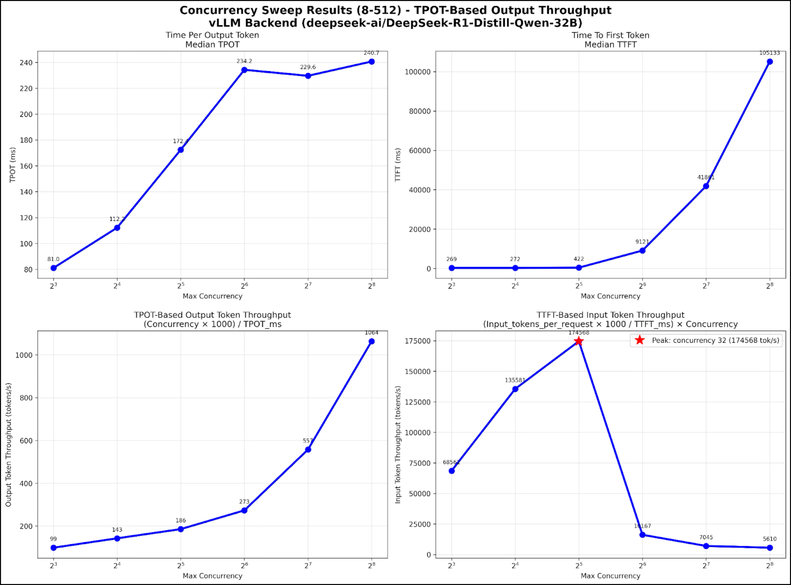
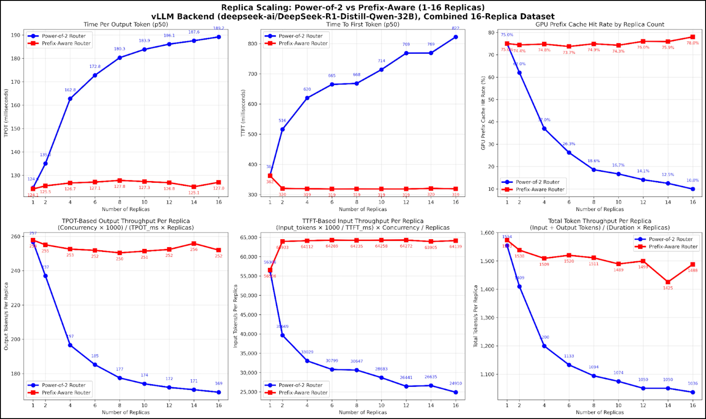

Ray Serve: Reduce LLM Inference Latency by 60% with Custom Request Routing
Ray Serve is a scalable model serving library built on top of Ray. It handles traffic routing, model chaining, running concurrent model replicas, scaling and more to streamline deployment of single or multiple models behind APIs. By default, Ray Serve uses a straightforward and effective routing strategy called “Power of Two Choices” where two workers are chosen at random and the task is assigned to whichever is less busy.
This routing approach works for most workloads, but LLM serving provides an opportunity for additional optimization. When running inference for multi-turn conversations or agents (tool-calling loops where prompts overlap), LLMs can take advantage of the prefix cache, which stores computed KV vectors from previous requests’ attention computations. If multiple requests share the same starting text (the “prefix”), the system can reuse earlier computations (a hot prefix cache) to reduce latency and reduce GPU cycle waste.
In particular, this capability is important for large Mixture of Experts (MoE) models which typically span multiple nodes, such as Deepseek-R1 or Kimi K2, because their DP + EP (data parallel attention + expert parallel sharding) optimal inference mode requires that requests are routed to the DP rank that has the best cache hit. By keeping related requests together, the system avoids repeating the same setup steps, which makes responses faster and the whole system more efficient.
As such, we are excited to announce support for custom request routing and a prefix-aware request router, PrefixCacheAffinityRouter, in Ray 2.49.
What is the impact? Our experiments on a 32B parameter model showed 60% reduction in time-to-first-token (TTFT) and more than 40% improvement in end-to-end throughput.
In this post, we’ll:
Provide the code snippet you can can try it on your Ray cluster
Walk through the router design improvements
Show benchmark methodology, reproduction scripts and results
LinkGive it a try
Start by creating a Ray Cluster, using either
Save the following snippet as serve.py and run with python serve.py:
1#serve.py
2#docker: rayproject/ray-llm:2.49.0-py311-cu128
3#Note: the custom request router API is currently in alpha and usage should be considered experimental.
4
5from ray import serve
6from ray.serve.llm.request_router import PrefixCacheAffinityRouter
7from ray.serve.llm import LLMConfig, build_openai_app
8
9llm_config = LLMConfig(
10 model_loading_config=dict(
11 model_id="qwen-0.5b",
12 model_source="Qwen/Qwen2.5-0.5B-Instruct",
13 ),
14 deployment_config=dict(
15 autoscaling_config=dict(
16 min_replicas=1, max_replicas=4,
17 ),
18 request_router_config=dict(
19 request_router_class=PrefixCacheAffinityRouter
20 ),
21 ),
22)
23
24app = build_openai_app({"llm_configs": [llm_config]})
25serve.run(app, blocking=True)Then send a query from the command line:
1curl -X POST http://localhost:8000/v1/chat/completions \
2 -H "Content-Type: application/json" \
3 -H "Authorization: Bearer fake-key" \
4 -d '{
5 "model": "qwen-0.5b",
6 "messages": [{"role": "user", "content": "Hello!"}]
7 }'Want to create a custom router of your own? For an educational example, see the Ray docs.
LinkCustom router design
By default, Ray Serve uses a “Power of Two choices” based request router. This is a standard load-balancing routing algorithm that simply chooses two deployment replicas at random and routes the request to the less busy of the two.

Figure 1: The limitations of Power of Two choices routing in LLM servingThis is very effective in the general case (where we assume request processing times are identically and independently distributed). More information here.
However, we can improve on this algorithm for LLM inference workloads by exploiting the vLLM engine’s prefix cache. Requests that share a prefix in the content of their prompt can skip some or all of the prefill stage of inference, improving throughput.

Figure 2: Example of a multi-turn conversation with prefix cachingIn order to achieve this, the PrefixCacheAffinityRouter maintains a character-level prefix tree that approximates the prefix-cache content across the deployment’s replicas. Each time a request is routed, its contents are inserted into the prefix tree and marked with the replica to which it was sent. Learn more about building and using the prefix cache-aware router here. We acknowledge the SGLang team, whose implementation inspired the character-level prefix cache approximating design.
For subsequent requests, the router queries the prefix tree with the new request’s contents and routes to the replica with the longest common prefix. Since the vLLM engine automatically caches the prompt, tracking the routed request contents provides a low-cost, character-level approximation of each engine replica’s prefix cache. If there is no strong match, or replica load is highly unbalanced, the router falls back to the default power of two routing strategy.
An alternative design would incorporate KV cache events emitted by each replica to more precisely replicate replica prefix cache state, at the cost of greater event handling overhead and implementation complexity. We left the exploration of this approach to future work and took the simpler, character-based, approach to set a baseline and demonstrate the flexibility of the custom routing API. With this change we're able to improve input token processing throughput by more than 2.5x. In the next section, we walk through our experiment methodology.
LinkBenchmarking Methodology
To benchmark the effectiveness of PrefixCacheAffinityRouter, we introduced PrefixRepetitionDataset, a new addition to existing benchmark suite in vLLM (PR vllm/#20638). This new dataset allows for fine-grained control over the length and frequency of shared prefixes. For instance, it can simulate a summarization workload of 1000 requests, each with one of two distinct system prompts of length 512, plus 256 tokens of unique content to be summarized. Reproduction scripts available here on GitHub.
The data was randomly generated according to the parameters below, and is intended to be illustrative of an online serving workload with multiple system prompts, or multi-turn chat. As we scaled the number of replicas in the server, we proportionally scaled the number of prompts, number of prefixes and client side concurrency in the benchmark at the same rate. In particular:
Prefix length: 512 tokens
Suffix length: 128 tokens (simulating constant 80% cache hit rate)
Number of prompts per replica: 512
Number of prefixes per replica: 32
Output length: 128 tokens
Maximum concurrency per replica: 32 - concurrent requests
In addition, the dataset was shuffled to avoid the degenerate case where the prefix-aware router overloads a replica by sending it all the prompts for a particular shared prefix in immediate succession.
For example, a test on 4 replicas would have the following dataset composition:
1024 total requests (256*4)
128 (32*4) unique prefixes of length 512, each with a random suffix of length 128
Maximum 128 (32*4) requests outstanding at any point
In the GitHub repo with the reproduction scripts, you can find an example CLI command corresponding to a benchmark trial.
LinkResults
To determine the optimal concurrency per replica, we fixed the workload as above and swept concurrency rates while measuring time per output token (TPOT) and time to first token (TTFT), (top row of plots below). From these measurements, we derived the input and output token throughputs implied by the max concurrency setting (the bottom set).
For example, at max_concurrency: 8, we measured TTFT 269ms. Since the prompt length was 2048 + 256 = 2304, the implied input token throughput is (2304 tokens * 1000 ms/s) / 269ms * 8 concurrent requests = 68520.44 tokens/s. This calculation makes it possible to estimate input and output token throughput independently.

Figure 3: Sweep to determine optimal concurrency per replicaAt maximum concurrency 32, the TTFT-based input token throughput is maximized. This reflects the optimal tradeoff between batch size and queuing delay for this model/hardware pair (minimum input token price). From this point, we held this concurrency per replica constant for the rest of the tests.
These experiments were performed using eight 8xL4 machines (64 GPUs total) on the Anyscale platform using RayTurbo. Similar trends were observed on open-source Ray about the effectiveness of prefix aware routing.
The model used was deepseek-ai/DeepSeek-R1-Distill-Qwen-32B. Engine keyword arguments were set as follows:
disable_log_stats: Falsetensor_parallel_size: 4max_model_len: 32000

Figure 4: Benchmarking performance on shared prefix dataset against increasing replica countThis set of plots shows the results of the benchmark. To interpret the plots, note that performance is the same for both routers when a single replica is tested. Of course, this is because there is no routing advantage when only one replica is available.
The top-left and top-middle plots show time per output token (TPOT) and time to first token (TTFT) respectively; lower is better. The top right plot shows GPU prefix cache rate; higher is better. The bottom plots show disaggregated and total throughput calculations; higher is better.
On the top right, we see that for a prefix-aware router, prefix cache hit rate stays constant as the number of replicas scales. In contrast, the power of two router’s random choices quickly decreases KV cache hit rate.
The implication of the KV cache hit rate is next shown on the middle TTFT plots. Since the router can effectively route each request to the replica with maximum kv-cache affinity, TTFT stays constant, at the same rate as if there was only a single replica.
KV cache hit rate also improves TPOT (left side plots), but by a less direct mechanism. Likely, TPOT is improved due to decreased prefill interference in decode.
LinkResources
Want to create a custom router of your own? For a basic example, see the Ray docs.
Reproduction scripts available here on Github.